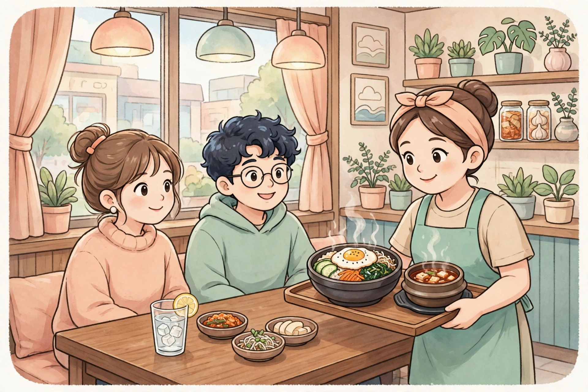

提示：如果頁面變成純文字、沒有圖片和播放按鈕，說明 Safari 閱讀器模式開了，點地址欄的書本圖標退出閱讀器，即可恢復彩色頁面。
餐廳點餐
안녕하세요, 두 명이에요. 창가 자리 있어요?
在餐廳點餐，學說人數、要靠窗的座位、點拌飯和泡菜湯。

안녕하세요, 두 명이에요. 창가 자리 있어요?
네, 이쪽으로 앉으세요. 메뉴를 보세요.
저는 비빔밥을 먹을게요. 그리고 김치찌개도 하나 주세요.
물도 주세요. 매운 거 잘 못 먹어요.
네, 알겠어요. 조금만 기다려 주세요.
감사합니다. 맛있게 먹을게요!
還沒播放，點上面的大按鈕開始。
慢速女聲朗讀，先聽一遍，再一句一句跟讀。如果大按鈕點了還是沒聲音，請點直接打開音頻，或點下面的備用朗讀。
逐句翻譯
- 你好，我們兩個人。有靠窗的座位嗎？
- 有的，請往這邊坐。請看一下菜單。
- 我要吃拌飯。再給我一份泡菜湯。
- 也請給我水。我不太能吃辣。
- 好的，我知道了。請稍等一下。
- 謝謝你。我會好好享用的！
文法講解
1. 「-을게요 / -ㄹ게요」：表示說話者自己的決定或意願
是什麼：表示說話者自己的決定或意願，意思像「我來……吧／我要……」。句型結構：動詞詞幹 + -을게요（詞幹有收尾音時）／-ㄹ게요（詞幹沒有收尾音時）。短文例句：저는 비빔밥을 먹을게요.（我要吃拌飯。）再舉一例：저는 집에 갈게요.（我要回家了。）容易錯的地方：-을게요 是說「我」要做的事，不能用來問別人；問別人要用 -을 거예요? 或 -ㄹ 거예요?
2. 「-도」：表示「也、還」
是什麼：表示「也、還」，加在名詞後面。句型結構：名詞 + -도。短文例句：물도 주세요.（也請給我水。）再舉一例：저도 커피를 좋아해요.（我也喜歡咖啡。）容易錯的地方：加了 -도 之後，就不能再加 -를 / -을，例如不要說 물을도 주세요，正確是 물도 주세요。
3. 「잘 못 + 動詞」：表示「不太能……、不太會……」
是什麼：表示「不太能……、不太會……」。句型結構：잘 못 + 動詞。短文例句：매운 거 잘 못 먹어요.（我不太能吃辣的東西。）再舉一例：저는 수영을 잘 못 해요.（我不太會游泳。）容易錯的地方：順序固定是 잘 못，不要說成 못 잘；잘 못 먹어요 和 못 먹어요（完全不能吃）意思不一樣。
常用詞彙
- 식당 餐廳（shik-dang，「식」像「息」）—— 이 식당은 정말 맛있어요.（這家餐廳真的很好吃。）
- 메뉴 菜單（me-nyu，像英文 menu）—— 메뉴를 보세요.（請看一下菜單。）
- 비빔밥 拌飯（bi-bim-bap）—— 비빔밥을 먹을게요.（我要吃拌飯。）
- 김치찌개 泡菜湯（gim-chi-jji-gae）—— 김치찌개도 하나 주세요.（再給我一份泡菜湯。）
- 자리 座位（ja-ri）—— 창가 자리 있어요?（有靠窗的座位嗎？）
- 창가 窗邊（chang-ga）—— 창가 자리에 앉고 싶어요.（我想坐在靠窗的座位。）
- 기다리다 等待（gi-da-ri-da）—— 조금만 기다려 주세요.（請稍等一下。）
- 맛있게 好吃地；愉快地（ma-shit-ge）—— 맛있게 먹을게요!（我會好好享用的！）
跟讀小提示
先按短句斷開慢慢讀，問句（있어요?）句尾要輕輕揚起；「주세요」是禮貌的請求，讀得輕柔一點；「먹을게요」的「-을게요」要連著讀，不要一個字一個字停頓。
留給你的問題
你最喜歡吃什麼韓國菜？試著用韓語回答：저는 ___을/를 좋아해요.